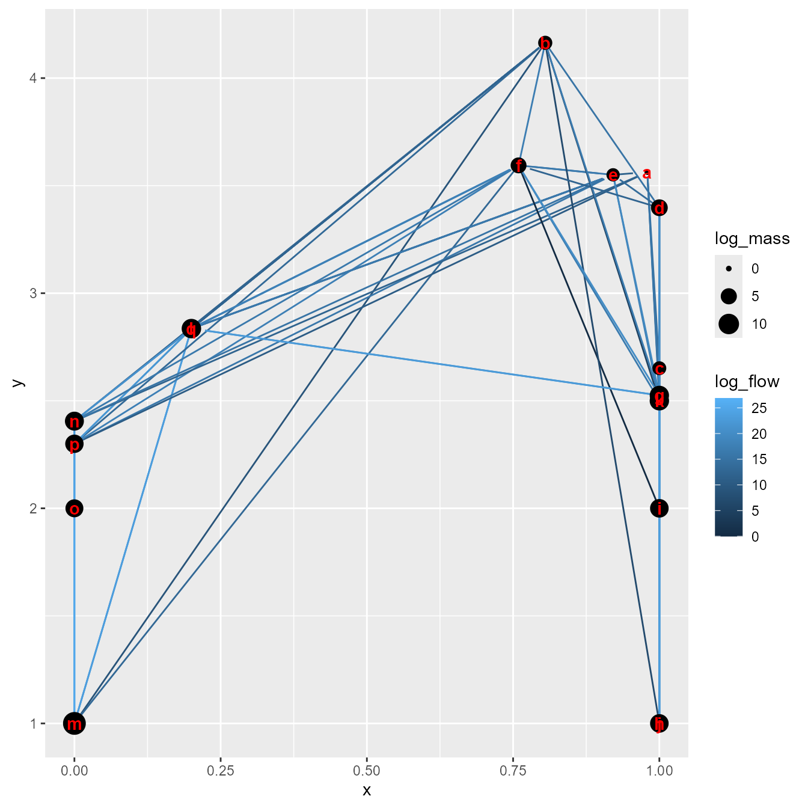

Age-structured and bottom-up interactions
James Thorson
Source:vignettes/too_slow/age_structured_interactions.Rmd
age_structured_interactions.Rmdecostate is an R package for fitting the mass-balance
dynamics specified by EcoSim as a state-space model. It can also
incorporate age-structured dynamics for selected multi-stanza groups,
and fit to age-composition and weight-at-age data for these
age-structured populations. Here, we show the format for this using data
from the Gulf of Alaska.
Gulf of Alaska
We first load the example data that is included with the package:
# Load, inspect, and attach data
data(gulf_of_alaska)
names(gulf_of_alaska)
#> [1] "years" "taxa" "type" "B"
#> [5] "P_over_B" "Q_over_B" "EE" "Diet_proportions"
#> [9] "stanza_groups" "Amax" "K" "d"
#> [13] "Amat" "Wmat" "Leading" "Wmatslope"
#> [17] "catch_data" "biomass_data" "agecomp_data"
attach(gulf_of_alaska)We then have to define various inputs used in the model.
Defining inputs
We have to specify the discretization used when integrating differential equations for biomass dynamics, and difference equations for age-structured populations:
# Biomass-dynamics steps
n_step = 50
# Age-structured dynamics steps
STEPS_PER_YEAR = 24We also specify default values for vulnerability and unassimilated food:
# Constant expected recruitment (matching assessment models)
# So h = 0.999 and back-calculate SpawnX
SpawnX = c( "Walleye pollock" = 4 / (5-1/0.999), "Sablefish" = 4 / (5-1/0.999) )
# Default vulnerability as fixed or starting values
X = array( 2,
dim = rep(length(taxa),2),
dimnames = list(Prey=taxa,Predator=taxa) )
# Unassimilated food
U = array( 0.2, dim=length(taxa), dimnames=list(taxa) )We then specify which parameters to estimate:
# Estimate catchability coefficient for all surveys
fit_Q = c( "Walleye pollock adult", "Sablefish adult",
"Euphausiids", "Large copepods" )
# Fit biomass-dynamics process errors for zooplankton
fit_eps = c( "Euphausiids", "Large copepods" ) #
# Fit recruitment deviations for age-structured populations
fit_phi = c("Walleye pollock", "Sablefish")
# Fit equilibrium biomass for age-structured populations
# using fishery as depletion experiment to identify scale
fit_B = c("Walleye pollock juv", "Sablefish adult")
# Fit PB with a prior
fit_PB = c( "Walleye pollock adult", "Sablefish adult" )
# Fit vulnerability for adult age-structured populations with a prior
fit_X = c("Walleye pollock adult", "Sablefish adult")Finally, we define priors using a function that is applied to parameters
log_prior = list(
# Normal(0,0.5) prior on diag(Xprime_ij), where X = exp(Xprime) + 1
diag(Xprime_ij) ~ dnorm(mean = 0, sd = 0.5),
# Normal prior on log(q) for adult pollock, matching stock assessment
logq_i['Walleye pollock adult'] ~ dnorm(mean = log(0.85), sd = 0.1),
# Tight normal prior on log(PB) for sablefish, matching assessment M value
logPB_i["Sablefish adult"] ~ dnorm(mean = log(0.1), sd = 0.1),
# Tight normal prior on log(PB) for pollock, matching assessment M value
logPB_i['Walleye pollock adult'] ~ dnorm(mean = log(0.3), sd = 0.1)
)Building and running the model
Finally, we will build inputs without running the model
out = ecostate(
taxa = taxa,
years = years,
catch = catch_data,
biomass = biomass_data,
agecomp = agecomp_data,
PB = P_over_B,
QB = Q_over_B,
DC = Diet_proportions,
B = B,
EE = EE,
X = X,
type = type,
U = U,
fit_B = fit_B,
fit_Q = fit_Q,
fit_PB = fit_PB,
fit_eps = fit_eps,
log_prior = log_prior,
control = ecostate_control(
n_steps = n_step,
profile = NULL, # Penalized likelihood so use empty set
random = NULL, # Penalized likelihood so use empty set
nlminb_loops = 0,
getsd = FALSE ),
settings = stanza_settings(
taxa = taxa,
stanza_groups = stanza_groups,
K = K,
Wmat = Wmat,
Amat = Amat,
d = d,
Amax = Amax,
SpawnX = SpawnX,
fit_phi = fit_phi,
STEPS_PER_YEAR = STEPS_PER_YEAR,
comp_weight = "multinom",
Leading = Leading,
Wmatslope = Wmatslope)
)We then modify starting and fixed values as needed:
map = out$tmb_inputs$map
tmb_par = out$obj$env$parList()
# Estimate vulnerability for adult fish with prior
map$Xprime_ij = factor( ifelse(taxa %in% fit_X, seq_along(taxa), NA)[col(array(dim=rep(length(taxa),2)))] )
# Penalized likelihood: Fixed SD for process errors = 1
map$logtau_i = factor(rep(NA,length(map$logtau_i)))
tmb_par$logtau_i = ifelse( is.na(tmb_par$logtau_i), NA, log(1) )
# Penalized likelihood: Fixed SD for recruitment deviations = 1
map$logpsi_g2 = factor(rep(NA,length(map$logpsi_g2)))
tmb_par$logpsi_g2 = ifelse( is.na(tmb_par$logpsi_g2), NA, log(1) ) Finally, we will re-build and run the model using these manual updates
out = ecostate(
taxa = taxa,
years = years,
catch = catch_data,
biomass = biomass_data,
agecomp = agecomp_data,
PB = P_over_B,
QB = Q_over_B,
DC = Diet_proportions,
B = B,
EE = EE,
X = X,
type = type,
U = U,
fit_B = fit_B,
fit_Q = fit_Q,
fit_PB = fit_PB,
fit_eps = fit_eps,
log_prior = log_prior,
control = ecostate_control(
n_steps = n_step,
profile = NULL, # Penalized likelihood so use empty set
random = NULL, # Penalized likelihood so use empty set
derived_quantities = c(), # Turn off for speed
map = map, # Pass map back in
tmb_par = tmb_par, # Pass parameters back in
getsd = FALSE ),
settings = stanza_settings(
taxa = taxa,
stanza_groups = stanza_groups,
K = K,
Wmat = Wmat,
Amat = Amat,
d = d,
Amax = Amax,
SpawnX = SpawnX,
fit_phi = fit_phi,
STEPS_PER_YEAR = STEPS_PER_YEAR,
comp_weight = "multinom",
Leading = Leading,
Wmatslope = Wmatslope)
)We can then visualize the estimated food web
library(ggplot2)
plot_foodweb(
out$rep$out_initial$Qe_ij,
xtracer_i = ifelse(taxa %in% c("Small phytoplankton","Large phytoplankton"),1,0),
B_i = out$rep$out_initial$B_i,
type_i = type )
#> Warning: Removed 14 rows containing missing values or values outside the scale range
#> (`geom_point()`).
We can also visualize fits to age-composition data. To do so, we first make a helper function to extract and plot fitted and estimated values
do_plot = function( stanzagroup_index ){
# Extract matrices and make into proportion at age
Obs = out$internal$Nobs_ta_g2[[stanzagroup_index]]
Hat = out$rep$Nexp_ta_g2[[stanzagroup_index]]
Obs = sweep( Obs, MARGIN=1, STATS=rowSums(Obs,na.rm=TRUE), FUN="/" )
Hat = sweep( Hat, MARGIN=1, STATS=rowSums(Hat,na.rm=TRUE), FUN="/" )
# Make long-form data frame
DF = expand.grid(
"Year" = rownames(Obs),
"Age" = colnames(Obs)
)
DF$Age = as.numeric(DF$Age)
DF$Obs = as.numeric(Obs)
DF$Hat = as.numeric(Hat)
#
ggplot(DF) +
geom_point( aes(x=Age, y=Obs) ) +
facet_wrap( vars(Year), ncol=5, shrink=FALSE ) + # , labeller=hospital_labeller
geom_line( aes(x=Age, y=Hat) ) + # , linetype="dotted"
scale_y_continuous(name = "Proportion at age") +
theme_classic()
}We then show this for sablefish:
do_plot(1)
#> Warning: Removed 27 rows containing missing values or values outside the scale range
#> (`geom_point()`).and for pollock
do_plot(2)Fits confirm that the model can track cohorts for age-structured dynamics
Runtime for this vignette: 8.87 mins